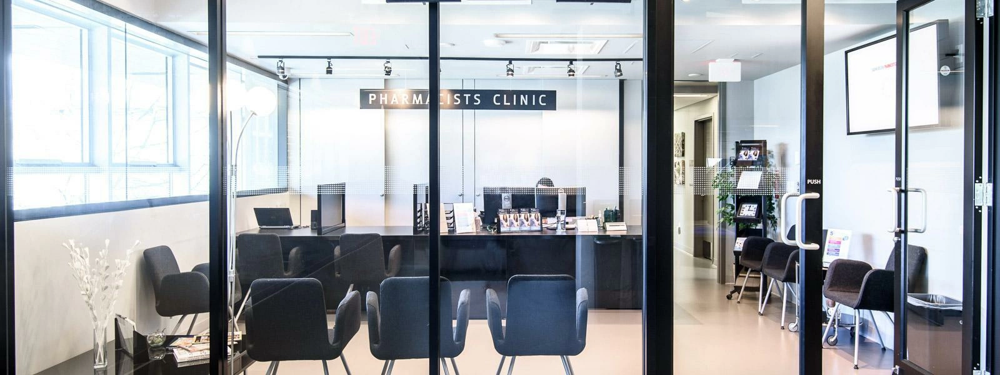

Powerclaim
Designing an insurance claims experience that reduces friction and uncertainty for users in crisis.
Overview
CLIENT
OUTPUTS
Appointment Booking Process
Appointment Booking Portal
Billing Process
Website
ROLE
Service Designer and UX Lead
TIMEFRAME
3 months
Context
This project came about from a prompt I gave second year design students in
2021/2022. I was teaching several introductory UX design courses and for an assignment, I challenged
the students to reflect on what media (books, tv show, movie, podcast, etc.) gave them joy during
the pandemic and to design an experience within that universe or branding. Students conceptualized a
music festival for the Simpsons characters, a Studio Ghibli restaurant and food delivery app, and a
Mars travel app inspired by the movie Interstellar.
Students got creative and pragmatic while applying design decisions inspired by existing and
fictional products.
One student was inspired by Batman and struggled to decide on a concept. One evening, while watching
a tv show I watched superheroes fight a monster in a city and the idea came to me "what if there was
an app for civilians to make insurance claims?".

Problem
A new provincial policy allowed pharmacists to treat minor ailments and contraceptives (MAC), but the clinic had no infrastructure for:

Booking
How patients book appts for MAC services

Billing
How the clinic bills the government for MAC services

Admin Workflow
How the clinicians and office assistants work together to treat more patients

Website Communication
How patients discover the new service offering
Objectives
- Integrate MAC services into existing workflows
- Avoid disrupting care for current patients
- Build for scale across all 21 eligible ailments
Solutions
Booking Portal
Service Redesign
Website + Posters

Process
I facilitated a workshop with the clinical leadership team, where we defined the requirements for integrating the new MAC services. This meant determining:
- Channels of care: which ailments required in-person vs virtual care
- Patient data collected: what patient data needed to be collected for charts and government billing
- New booking system: how the booking logic would need to distinguish between MAC and existing appointment types.

Understanding the current state
Using journey maps and service blueprints, I quickly documented both the patient experience and admin/clinical processes to understand how patients, staff, and clinicians interact.
The goal of this is to gain a deep understanding of current operational processes, and build alignment with the clinical leadership team.
Identifying friction points
Additionally, the maps helped pinpoint where the new MAC services would create friction within existing processes.


Initial Pilot Plan
The MAC services was piloted by initially offering appointment one day a week and supporting a subset of 10 out of the 21 eligible minor ailments.
This phased approach allowed the clinic to test new workflows and assess capacity before expanding the service.
My Roles
Pilot lead: During this phase, I acted as the primary point of coordination between clinical team and developers
Advocate for patient needs: in technical discussions while also communicating system constraints and implementation considerations back to clinic staff.
Service decision-making: I led decision-making around service updates and workflow changes, ensuring feedback from the clinic was translated into actionable, human-centred improvements.

Impact
Patients treated during the pilot period
Appointments completed per month
From pilot to full adoption
Services Expanded
The MAC service expanded beyond the initial 10-ailment pilot to support the full range of eligible conditions.
Uninterrupted Care
New services were integrated without disrupting care for existing patients.
Staff Workload Improved
Online booking adoption reduced inbound phone calls, lightening the administrative load on the medical office assistants.
Website Improvements
While integrating the MAC services, I identified gaps in how the clinic communicated with patients, specifically around how patients found information and prepared for visits.
After piloting MACs, I began redesigning the clinic's website and created a dedicated patient information section, including suggested questions to ask the care team and a resource for downloading personal prescription history. Both remain live on the clinic's website.